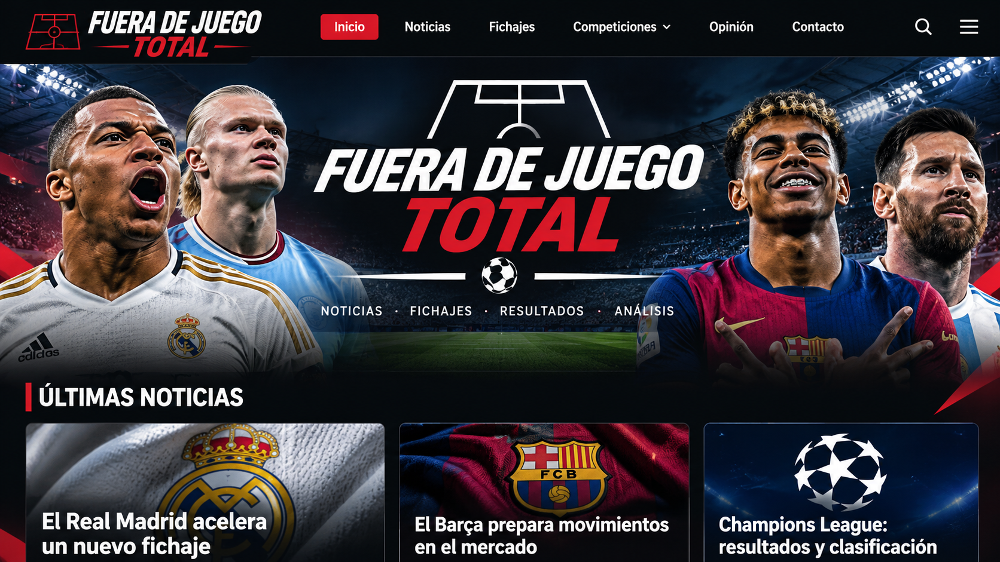

🏆
Champions League
La Champions vuelve a poner a prueba a los grandes
Repasamos las claves, los duelos más esperados y lo que puede decidir la jornada europea.
Noticias, debates, resultados y rumores del mundo del fútbol. Bienvenido a Fuera de Juego Total: donde cada jornada tiene una historia.

Repasamos las claves, los duelos más esperados y lo que puede decidir la jornada europea.
El mercado nunca descansa. Aquí encontrarás contexto para entender los movimientos y los rumores.
Claves de los partidos, protagonistas y momentos que pueden cambiar la clasificación.
Estos marcadores son demostrativos, no resultados en directo.
¿Qué competición te gusta más?